上達への道。
上達への道。vol.02 効果的な“素引き練習”で基礎を習得する素引き練習法
月刊「弓道」の連載「上達への道。」の第2回。実際に弓を持ち、手の内のつくり方や弓の張り方を覚えながら、射法八節に沿って正しいバランス感覚を身につける素引き練習法を、写真つきで紹介しています。
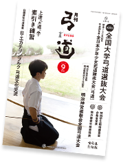
素引き練習とは
実際に弓を持ち、矢を番えずに射法八節の動作を行う練習法です。前回のゴム弓練習で身につけた形を、実際の弓の重みや張力の中で確かめます。
はじめに覚えるのは「手の内のつくり方（左手で弓を正しく握ること）」と「バランス感覚」です。何度も素引き練習を重ねることで、余計な力みが抜け、安定した射形が身につきます。
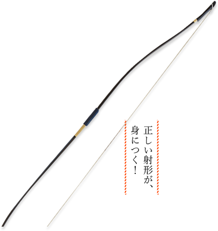
弓の張り方を覚えよう！
弓を押さえる人が末弭（弓の上部先端）を右手の手のひらでしっかり押さえ、張る人は左手で握りの下あたりをつかみ、右手で弦輪を持ちます。
張る人が腰をかがめ、左足の太ももに弓を乗せ、弦輪がピンと張るように左手で握りの下を押しながら、本弭（弓の下部）に弦輪をかけます。
※弓張り板が設置されている場所では、指導に従って的確に張りましょう。
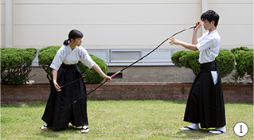
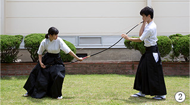
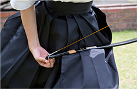
手の内のつくり方
射を決めるのが手の内です。正しい基礎を覚え、確実に調えられるように学びましょう。
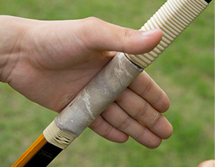
1. 左手の「天紋筋」に弓を当てる
天紋筋に弓と手のひらが直角になるように、弓の外竹の左角を当てます。親指以外の指は伸ばします。
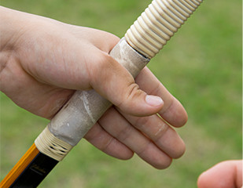
2. 親指で弓をつかむ
親指と人さし指の間の「虎口」の皮を、弓にあてがうようにして巻き込みます。親指以外の指は伸ばしたままにします。
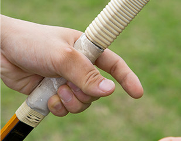
3. 包むような感覚で握る
人さし指以外を弓を包むように内側に曲げ、中指の先と親指のはらを合わせます。素引き練習では右手も弦をしっかり握ります。
射法八節に沿った素引き練習の流れ
正しい姿勢とバランス感覚を保ちながら、各動作を確かめます。
- 一足踏み
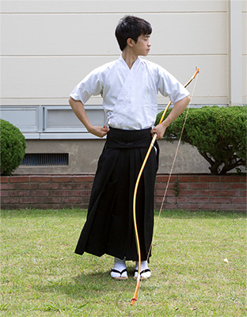
左手に弓を持ち、右手は腰に当て、足を左右に踏み開きます。幅は身長の約半分、角度は約60度が基本です。
- 二胴造り
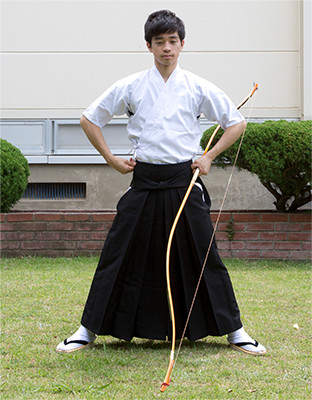
足踏みで調えた姿勢を保ちながら、両足の上に上体を正しく置きます。腰をすえ、左右の肩を沈め、心気を丹田におさめます。
- 三弓構え
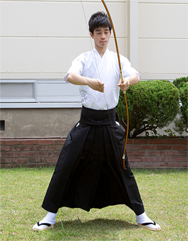
弓を起こして身体の中心にもち、右手で弦をしっかり握ります。両こぶしの高さをそろえ、左手は調えた手の内をつくります。
- 四打起し
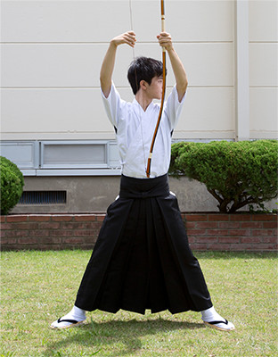
呼吸に合わせて両腕をしなやかにすくい上げます。両こぶしは頭よりやや上にし、肩に余計な力を入れないようにします。
- 五引分け
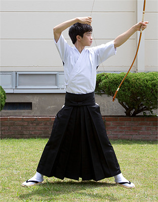
両こぶしの高さをそろえながら、左手を開き、右ひじを折り曲げて引きます。左右の肩とこぶしが平行になることが重要です。
- 六会
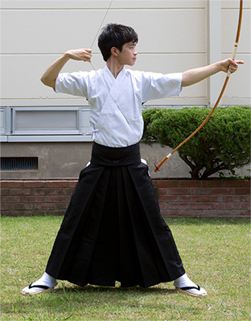
引分けの状態から、身体全体を使って両腕を左右均等に張り合います。背骨をまっすぐ伸ばし、五重十文字の働きを意識します。
監修・指導・スタッフ
- 監修
- 影山 一（全日本弓道連盟理事）
- 指導
- 山田 紀之（埼玉県立川越総合高等学校弓道部顧問）
- 演武協力
- 埼玉大学弓道部
- 撮影
- 杉田 賢治
- 参考資料
- 『弓道教本第1巻』『弓道講座全4巻（DVD）』（いずれも全日本弓道連盟発行）